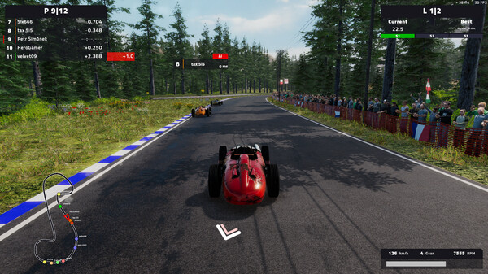

Das Gameplay des Spiels Engine Evolution ist mit einem Auto eine Strecke
möglichst schnell abzufahren, also ein typisches Rennspiel. Das Spiel
ist so erstellt, dass es immer spannend ist eine weitere Runde zu fahren
und seine Gegenspieler zu crashen oder zu überholen. Das Ziel ist als
erster durch die Ziellinie zu fahren, wie es in einem Rennspiel üblich
ist. Nach jedem Rennen erhält man eine bestimmte Menge an
Erfahrungspukten und Geld, den Nutzen von dem Erfährt man unter
Fahrzeuge und Upgrades.

Diese Webseite wurde ermöglicht durch Passivkonto GmbH, Wir danken ihnen
für ihre Mitarbeit und aktive Kooperation.